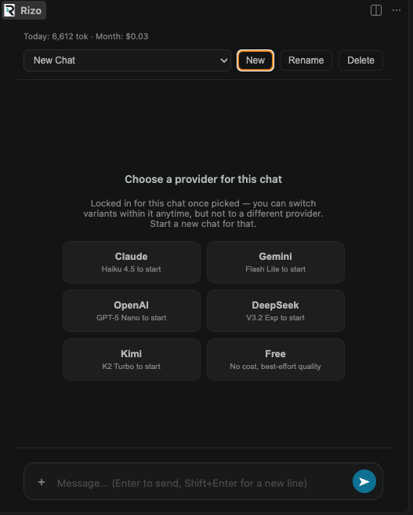
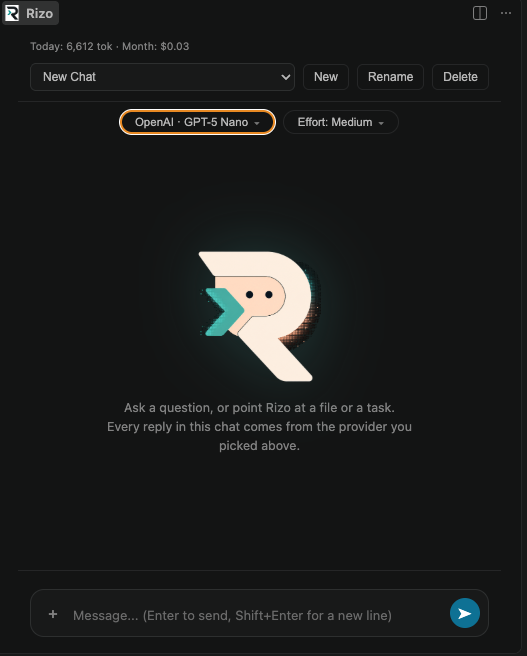

Each chat locks to one company — Claude, Gemini, OpenAI, DeepSeek, Kimi, or Free — so switching cost tiers mid-task never means a different model losing the thread. Swap variants inside that company any time, and turn reasoning effort up or down per message. No shared account, no markup: OpenRouter bills you directly for exactly what you use.
code --install-extension ChaitanyaAggarwal.rizo
A new chat opens with a one-time choice: Claude, Gemini, OpenAI, DeepSeek, Kimi, or Free. That company is locked in for the whole chat — the in-chat switcher only ever offers its own variants, never a different one. One tool-calling convention, one system-prompt format, one context window, for the life of the conversation. Want a different company? Start a new chat.
| Provider | Starts on | Also switch to | Also switch to |
|---|---|---|---|
| Claude | Haiku 4.5 | Sonnet 5 | Opus 5 |
| Gemini | Flash Lite | Flash | Pro |
| OpenAI | GPT-5 Nano | GPT-5 Mini | GPT-5 |
| DeepSeek | V3.2 Exp | V3.2 | R1 |
| Kimi | K2 Turbo | K2 | K2 Thinking |
| Free | Auto — best available free model, no cost | ||
Every provider starts a new chat on its cheapest variant. Model IDs and pricing are checked against openrouter.ai/models periodically — see the source for exact figures.
A second pill next to the model switcher, adjustable any time, no restart.
Effort controls how hard the model you already picked thinks — it maps straight to OpenRouter's unified reasoning.effort field, which each provider translates into its own native reasoning budget. It's not a second router: the company and variant you're on stay exactly the same.
Today's token count and this month's estimated cost, running totals across every chat and every provider, reset automatically at midnight and on the 1st. Per-chat totals sit under the composer too — nothing buried in a separate dashboard.
The provider picker on a new chat, and the model + effort pills once you're in one.


Every file write and every shell command stops for approval first. A malicious repo can prompt-inject the model into attempting a bad tool call, but it can't click "Approve" for it.
git push --force, reset --hard, branch -D, rm -rf and its long-form/colon-refspec equivalents get an elevated warning every single time. "Always Allow" is deliberately not offered for these.Sign up at openrouter.aiFree account, add credit or use the free-tier models with none.
Paste your key into Rizo, onceStored in your OS keychain via VS Code's own Secret Storage, never written to a file.
OpenRouter bills you directlyFor exactly what you use. Rizo has no server sitting in between and never sees a cent of it.
Separate conversations, each with its own history and its own locked-in provider. Auto-named from the first message, renameable, deletable — with a confirm dialog, since there's no undo.
Per-chat token/cost totals under the composer, plus a running today/this-month readout at the top of the panel across every chat and provider — not buried in a dashboard.
Runs commands in your workspace root with a 60s timeout and a capped output buffer: bounded, not a runaway loop.
Apache License 2.0. Fork it, read the routing logic, send a PR. Nothing about how it decides where your money goes is hidden.